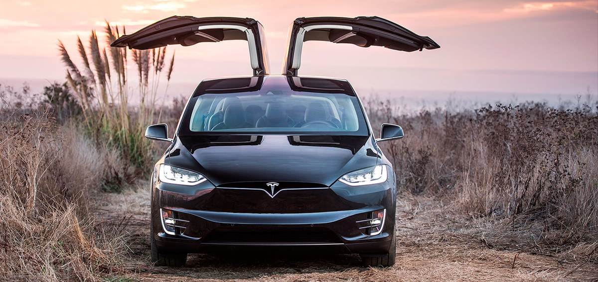
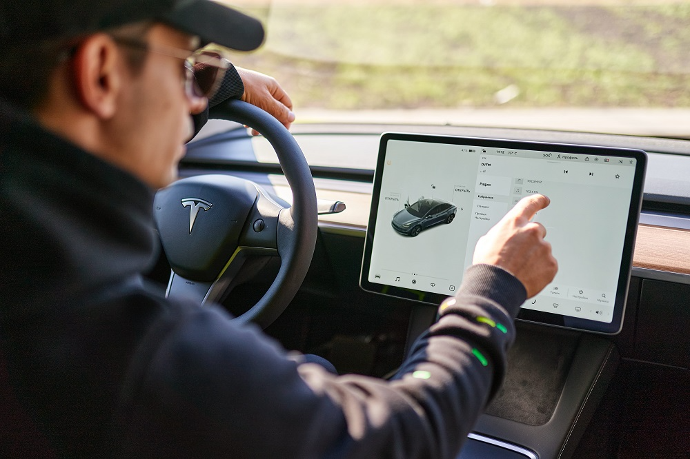
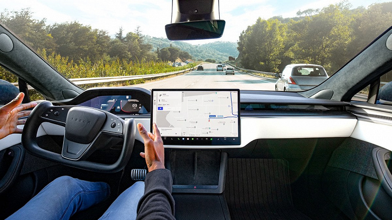

Tesla (Tesla Motors) is an American company, a manufacturer of electric vehicles and solutions (see. Solarcity) for storage of electricity
The company was founded in July 2003 by Martin Eberhard [EN] and Mark Tarpenning, but current The company's management calls Ilon Mask co -founders, Jeffrey Brian Strablel and John Wright.
In 2019, Tesla became the largest producer of electric vehicles in the world. Sedan Tesla Model 3 became the most An electric car in history is sold, overcoming 800 thousand.

Story
Tesla (founded as Tesla Motors) was registered on July 1, 2003 by Martin Eberhard and Mark Tarpenning. In February 2004, three founders attracted an investment of $ 7.5 million, while Ilon Musk made $ 6.5 million. Mask became the chairman of the board of directors and appointed Eberhard General director.
Tesla was the purpose of a premium -sports car focused on first users, And then go to more mass cars including sedans and available compact machines. Prototypes The first Tesla car was officially represented by the public on July 19, 2006 in Santa Monica (California).
In 2006, mask managed to hold several rounds of funding from investment funds and well known Entrepreneurs (including Google Co -Snabners) attract $ 100 million. As a result, Tesla began Production of the first model Roadster in 2008.
In January 2010, Tesla received a loan from the US Department of Energy of $ 465 million, Which company paid off in 2013.In May 2010 Tesla began to build a Fremont Factory (California) for the production of the model S.
June 29, 2010 Tesla launched a primary public placement of shares (IPO) on NASDAQ, becoming the first American Automobile Company that made IPO after Ford Motor in 1956.This gave the company Access to the largest source of funding.
In June 2012, Tesla started production of her second car - Model S. In July 2017 Tesla She started selling Model 3 sedan.
in May 2017 Ilon Musk presented a company plan that envisages adding to the line electric cars and truck.
In 2019, Tesla will buy Maxwell's battery manufacturer, the number of transactions will be approximately 218 million Dollars. Obidies plan to complete the agreement in the second quarter of 2019 [
March 14, 2019 New Tesla Y. In November 2020, Tesla, Uber and 26 more US companies created an organization with zero emissions Association (Zeta) that will lobby an increase in the number of electric vehicles in the United States. ASOCIATION will A lawyer of change in national policy that will push the industry to a full transition to Electric machines in transport sectors by 2030 are light, medium and high and high and high.25 October 2021 Annual capitalization of the company exceeded 1 trillion dollar

Plan
In 2020, in his Twitter, Ilon Musk said the new Robotaxi service is ready to use in this year. Innovations are applied to all Tesla models and are a completely autonomous taxi park. Robotted electric vehicles will be able to deliver passengers without attracting the driver through the "smart" system Complete self -control. You can control them with a mobile application.
Thus, a car exchange system will be created: when the owner of an electric car can take at a distance in Rent your car. The panel from such trips will be divided between the owner of the car and the company. On this one At the moment when the system is fully ready and works (according to the mask) .TACE of the implementation of the Robotaxi project depends Only on coordination with regulatory bodies and issuing a permit for autonomous driving 5 levels.
On May 11, 2021 it became known that the company refused plans to buy land in Shanghai Expanding its plant in this city.
July 21 2021. Founder Ilon Musk said Twitter that his company intends to create a network of stations Quick charging for Tesla is also available for electric vehicles of other manufacturers.

production capacity
Tesla Factory - Framenta Factory (California). was a joint venture General Motors and Toyota, was opened in 1984; Tesla Motors bought it Toyota in 2010 for $ 42 million.Gigafactory 1 in Nevada - the largest in the world - will From 2020, release 500,000 batteries for electric vehicles.